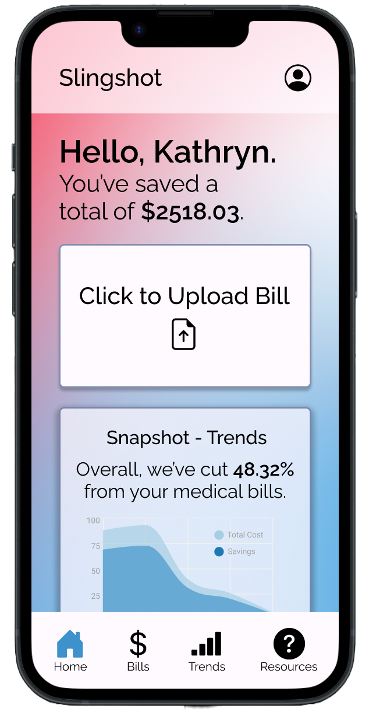

A group exercise in designing an interactive interface for an emerging startup from the ground up.

For this project, we chose to design a mobile interface for Slingshot, a YC startup that automatically monitors and reduces people's medical bills.
Their product works as follows: when a patient gets a medical bill they upload it to Slingshot, and Slingshot analyzes the bills to find the errors, the up-codes, the items insurance should have covered but didn’t, and the items that can be negotiated to a lower cost. Slingshot handles all the time-consuming interactions with hospitals and insurance companies to fix errors and negotiate costs.
Slingshot has both Business-to-Business and Business-to-Consumer functionality — users can use Slingshot's software themselves, but Slingshot also offers their software to employers as a free benefit, charging a percentage of the savings they get.
We decided to focus on the Business-to-Consumer aspect of Slingshot, where users interact with the product directly and receive savings on their medical bills. As a result, we decided on creating a mobile interface for Slingshot, since we believe that to be the most convenient interface for everyday users.
Because Slingshot is focused around consumer health services, there's a wide range of potential users who would be impacted by our interface: